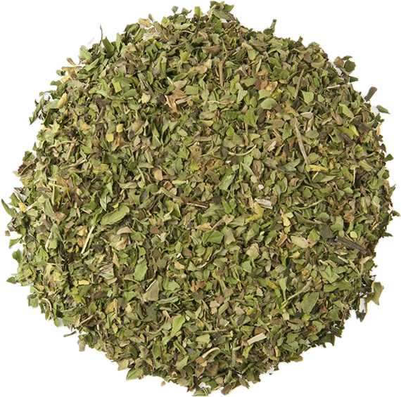

Rosmarinus officinalis
Overview
Rosemary is an aromatic herb in the mint family, native to the Mediterranean region. It has needle-like leaves and small blue or purple flowers and is prized for its strong, piney flavor and aroma. Rosemary is commonly used fresh or dried as a culinary herb and seasoning.
Cultural Overlap
Rosemary is used in cuisines around the world, particularly in Mediterranean, Italian, French, and Middle Eastern cuisines. It is used to flavor meats, poultry, fish, vegetables, bread, and sauces. Rosemary also has cultural significance in traditional medicine and folklore, where it is believed to have various health benefits and protective properties.